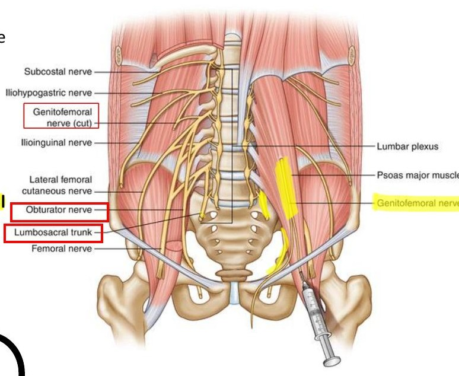
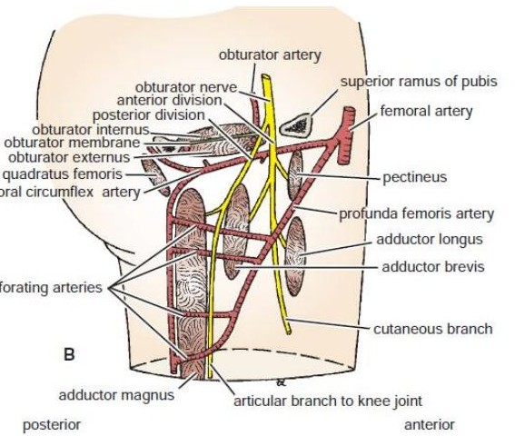
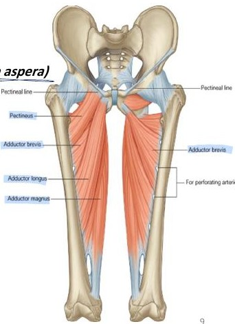
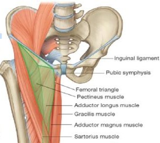
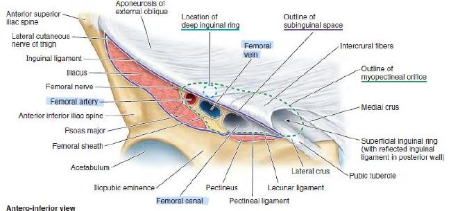
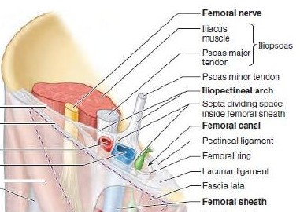
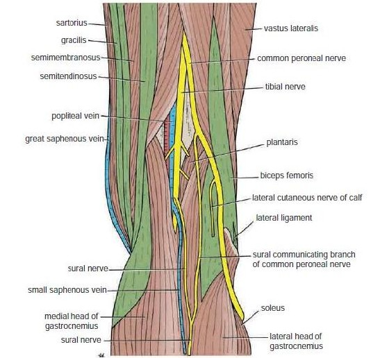
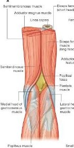

Lecture 5
Lumbar plexus
Abbreviations: L = lumbar (spinal level), T12 = 12th thoracic (subcostal nerve), n. = nerve, m. = muscle, GFN = genitofemoral nerve, LFCN = lateral femoral cutaneous nerve (“lateral cutaneous nerve of thigh”), ASIS = anterior superior iliac spine, SGS = Sartorius–Gracilis–Semitendinosus insertion area, GSV = great saphenous vein.
Formation: anterior primary rami of L1–L4 (plus a contribution from T12), formed within the substance of psoas major. Branches: 4 small nerves (iliohypogastric, ilioinguinal, genitofemoral, LFCN) + 2 main nerves (femoral, obturator).
Roots
- L1: iliohypogastric, ilioinguinal, 1st root of GFN
- L2 (4 branches): 2nd root GFN, 1st roots of LFCN, femoral, obturator
- L3: 2nd roots of LFCN, femoral, obturator
- L4: 3rd roots of femoral and obturator + upper root of lumbosacral trunk (joins L5 → sacral plexus)
Exit from psoas major

- Psoas major
- Genitofemoral nerve on anterior surface
- Obturator nerve at medial border
- Anterior surface: genitofemoral
- Medial border: obturator + lumbosacral trunk
- Lateral border: iliohypogastric, ilioinguinal, LFCN, femoral
Mnemonic: femoral & obturator = L2, 3, 4; LFCN = L2, 3; GFN = L1, 2.
Nerves
Branches of the plexus
| Nerve | Roots / exit | Course & relations | Supply |
|---|---|---|---|
| Iliohypogastric | L1; lateral border of psoas | Lateral to psoas, anterior to quadratus lumborum, posterior to kidney; pierces external oblique aponeurosis above superficial inguinal ring | Lateral abdominal wall muscles; skin of posterolateral gluteal region and pubic region |
| Ilioinguinal | L1; lateral border | Same posterior-wall relations; enters inguinal canal (by piercing internal oblique) and leaves via superficial ring | Lateral abdominal muscles; skin of upper medial thigh, root of penis and anterior scrotum (men) or mons pubis and labium majus (women) |
| Genitofemoral | L1–L2; anterior surface of psoas | Divides into femoral branch (lateral to external iliac artery, behind inguinal ligament, inside femoral sheath lateral to artery, pierces anterior sheath and fascia lata) and genital branch (through deep inguinal ring) | Femoral: skin of upper anterior thigh. Genital: cremaster and anterior scrotal skin (men); round ligament, mons pubis, labium majus (women) |
| LFCN | L2–L3; lateral border | Lateral to psoas, anterior to iliacus, behind inguinal ligament (near ASIS); anterior and posterior divisions | Skin of anterior and lateral thigh down to the knee (purely sensory) |
Clinical link: the femoral branch of GFN is the only nerve inside the femoral sheath. The femoral nerve itself lies outside it, lateral.
Femoral nerve (L2–L4; posterior divisions)
- Largest branch; emerges at the lateral border of psoas, passes behind the inguinal ligament lateral to the femoral artery (outside the sheath), then splits into anterior and posterior divisions.
- Supplies iliacus in the abdomen.
| Division | Motor | Sensory |
|---|---|---|
| Anterior | Sartorius; pectineus | Medial and intermediate cutaneous nerves of thigh |
| Posterior | Quadriceps (rectus femoris, vastus lateralis, medialis, intermedius) | Saphenous nerve; articular branches: hip (from nerve to rectus femoris), knee (from nerves to the three vasti) |
Saphenous nerve: runs down and medially, emerges between the tendons of sartorius and gracilis, accompanies the GSV, passes in front of the medial malleolus and along the medial border of the foot to the ball of the big toe. It is the only femoral branch below the knee (skin of the medial leg and foot).
Injury: weak knee extension, absent patellar reflex, sensory loss over the anterior thigh and medial leg. GSV stripping at the ankle can injure the saphenous nerve.
Obturator nerve (L2–L4; anterior divisions)

- Obturator nerve near the canal
- Branches in the medial thigh
Emerges at the medial border of psoas, passes through the obturator canal and divides into two divisions on either side of adductor brevis.
| Division | Motor | Sensory |
|---|---|---|
| Anterior | Gracilis, adductor longus, adductor brevis; occasionally pectineus | Hip joint; subsartorial plexus → skin of medial thigh |
| Posterior | Obturator externus, adductor part of adductor magnus; occasionally adductor brevis | Knee joint |
Hilton’s law: the nerve supplying a joint also supplies the muscles acting on it and the skin over it. This explains hip pain referred to the knee (obturator).
Lecture 6
Thigh compartments

- Adductor longus
- Adductor brevis
- Adductor magnus
| Compartment | Muscles | Nerve | Artery |
|---|---|---|---|
| Anterior | Sartorius, iliacus, psoas, pectineus, quadriceps femoris | Femoral (psoas: lumbar plexus) | Femoral |
| Medial | Gracilis, adductors longus/brevis/magnus (adductor part), obturator externus | Obturator | Profunda femoris and obturator |
| Posterior | Biceps femoris, semitendinosus, semimembranosus, adductor magnus (hamstring part) | Sciatic (tibial part; short head biceps = common fibular part) | Branches of profunda femoris |
Clarification: pectineus is listed in the anterior compartment (femoral nerve) in these slides, but is often grouped with the medial adductors; it is on the first medial layer with adductor longus. Medial layers: 1st pectineus + adductor longus, 2nd adductor brevis, 3rd adductor magnus.
| Muscle | Origin | Insertion | Nerve | Main action |
|---|---|---|---|---|
| Sartorius | ASIS | Upper medial tibia (SGS) | Femoral | Flexes, abducts, laterally rotates thigh; flexes, medially rotates leg |
| Psoas | T12 + L1–L5 transverse processes, bodies, discs | Lesser trochanter (with iliacus) | Lumbar plexus | Flexes thigh on trunk |
| Iliacus | Iliac fossa | Lesser trochanter | Femoral | Flexes thigh on trunk |
| Pectineus | Superior pubic ramus | Upper linea aspera | Femoral | Flexes and adducts thigh |
| Quadriceps | Rectus: anterior inferior iliac spine + ilium above acetabulum; vasti: upper femur shaft | Patella, then tibial tuberosity via ligamentum patellae | Femoral | Extends knee; only rectus femoris flexes hip |
| Adductor longus | Body of pubis | Linea aspera | Obturator | Adducts thigh |
| Adductor brevis | Inferior pubic ramus | Linea aspera | Obturator | Adducts thigh |
| Adductor magnus | Adductor part: ischiopubic ramus. Hamstring part: ischial tuberosity | Linea aspera, gluteal tuberosity, medial supracondylar line; hamstring part: adductor tubercle | Adductor part: obturator. Hamstring part: tibial (sciatic) | Adducts; hamstring part extends hip |
| Gracilis | Inferior pubic ramus, ischial ramus | Upper medial tibia (SGS) | Obturator | Adducts thigh; flexes leg |
| Obturator externus | Outer obturator membrane, pubic and ischial rami | Medial surface of greater trochanter | Obturator | Lateral rotator of thigh |
| Biceps femoris | Long: ischial tuberosity. Short: linea aspera, lateral supracondylar ridge | Head of fibula | Long: tibial part. Short: common fibular part | Flexes and laterally rotates leg; long head also extends hip |
| Semitendinosus | Ischial tuberosity | Upper medial tibia (SGS) | Tibial part | Flexes, medially rotates leg; extends hip |
| Semimembranosus | Ischial tuberosity | Medial condyle of tibia (not SGS) | Tibial part | Flexes, medially rotates leg; extends hip |
Adductors as a group: main action is adduction (little role in walking or standing). Because they arise anterior to the hip they assist flexion, and because they insert on the back of the femur they assist lateral rotation.
Knee locking: in full extension rotation is impossible (locked). Popliteus unlocks it by laterally rotating the femur on the tibia before flexion. Thigh muscles act chiefly on the knee: quadriceps extends, hamstrings flex.
Femoral region
Femoral triangle, sheath and canal
Femoral (Scarpa’s) triangle

- Inguinal ligament
- Medial border of sartorius
- Medial border of adductor longus
- Base: inguinal ligament
- Lateral: medial border of sartorius
- Medial: medial border of adductor longus
- Floor (lateral → medial): iliopsoas, pectineus, adductor longus
- Roof: skin, superficial fascia (superficial inguinal nodes, GFN femoral branch, ilioinguinal branches, superficial femoral vessel branches, end of GSV), deep fascia with saphenous opening
Contents

- Femoral artery
- Femoral vein
- Femoral canal
- Terminal femoral nerve and branches
- Femoral sheath, artery, vein, deep inguinal nodes
- Femoral branch of GFN; LFCN
Mnemonic NAVEL (lateral → medial): Nerve, Artery, Vein, Empty space (femoral canal), Lymphatics.
Femoral sheath: funnel-shaped fascial sleeve about 2.5 cm below the inguinal ligament; anterior wall = fascia transversalis, posterior wall = fascia iliaca. Two septa make three compartments:
Lateral: artery + GFN femoral branch→Intermediate: vein→Medial: lymphatics = femoral canal
Femoral canal (ring) boundaries

- Femoral vein
- Femoral ring
- Anterior: inguinal ligament
- Medial: lacunar ligament (Gimbernat’s)
- Posterior: pectineal ligament (Cooper’s)
- Lateral: femoral vein
| Hernia | Neck relative to pubic tubercle | Notes |
|---|---|---|
| Femoral | Below and lateral | Peritoneum pushes down femoral canal (femoral septum) |
| Inguinal | Above and medial | Passes through the inguinal canal |
Posterior thigh
Popliteal fossa

- Tibial nerve
- Popliteal vein
- Popliteal artery
Boundaries (diamond)

- Biceps femoris
- Medial hamstrings
- Medial gastrocnemius
- Lateral gastrocnemius
- Upper lateral: biceps femoris
- Lower lateral: lateral head of gastrocnemius + plantaris
- Upper medial: semimembranosus and semitendinosus
- Lower medial: medial head of gastrocnemius
- Floor: popliteal surface of femur, posterior knee joint, popliteus
- Roof: skin, superficial fascia, deep fascia
Contents
- Popliteal artery and vein
- Tibial (medial popliteal) and common fibular/peroneal (lateral popliteal) nerves
- Small saphenous vein, connective tissue, lymph nodes
Depth (superficial → deep): tibial nerve → popliteal vein → popliteal artery (deepest). The sciatic nerve divides into tibial and common fibular in the fossa.
Revision
High-yield summary
- Plexus = L1–L4 (+T12) inside psoas.
- Femoral and obturator = L2–4; LFCN = L2–3; GFN = L1–2.
- Exit: anterior = GFN; medial = obturator; lateral = the rest.
- Femoral nerve outside sheath; GFN femoral branch inside.
- SGS (“Say Grace before Tea”): Sartorius (femoral), Gracilis (obturator), Semitendinosus (tibial).
- Adductor magnus has dual supply (obturator + tibial).
- Hamstrings (not short head biceps, not adductor magnus hamstring part crossing knee) extend hip.
- Femoral hernia: below/lateral to pubic tubercle.
Practice
MCQs
Tap an answer to lock it and see the explanation.
Answered 0/0 · Correct 0